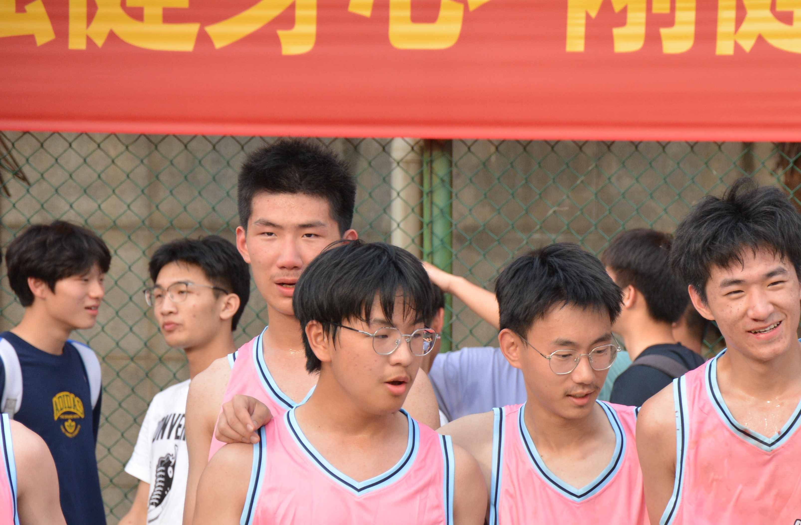
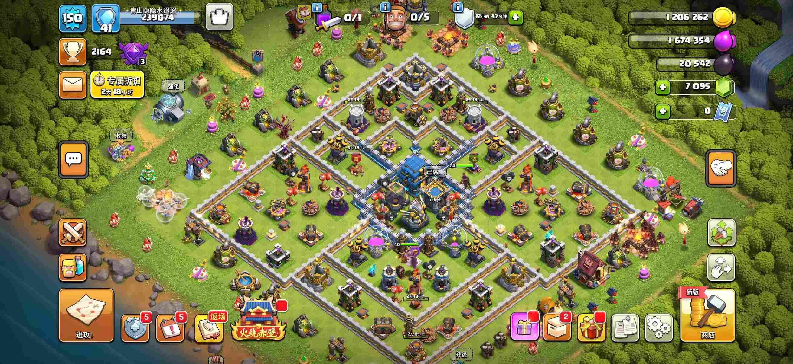

> let's begin
欢迎访问兴趣爱好系统！
正在加载陶晨博的兴趣数据及媒体资源...
[加载完成]
—— 「生活不止代码，还有诗和远方」
正在加载陶晨博的兴趣数据及媒体资源...
[加载完成]
—— 「生活不止代码，还有诗和远方」
> list hobbies with media
🎯 兴趣爱好列表（媒体展示）:
吉他
吉他是高中舍友教的，想起高中在寝室的间隙匆匆拨弄几下琴弦，还真有点怀念
摄影
高中和同学们制作的寝室宣传片的片头，素材都是生活中拍摄的，高中美好的回忆
篮球

高中班赛首发中锋，结果被打爆了，对不起在外线挥汗如雨的兄弟们
游戏

部落冲突八年老粉，曾经也是顶级玩家，高中三年没玩，现在已经被时代狠狠地抛在了后面。
> exit
感谢浏览陶晨博的兴趣爱好！